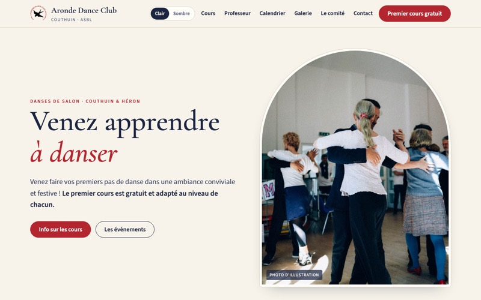
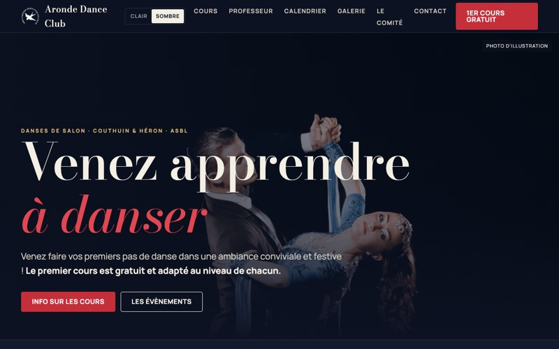
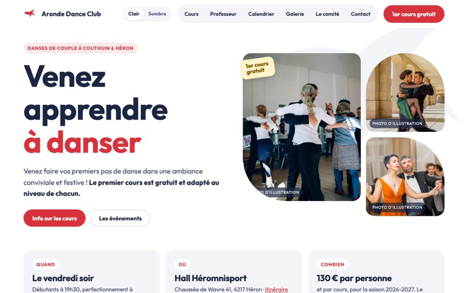
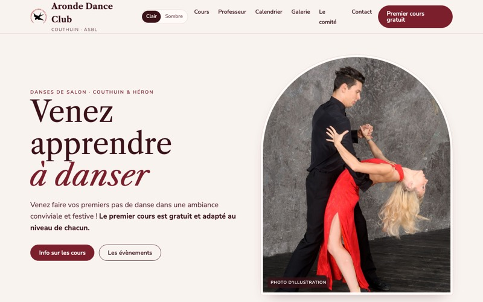
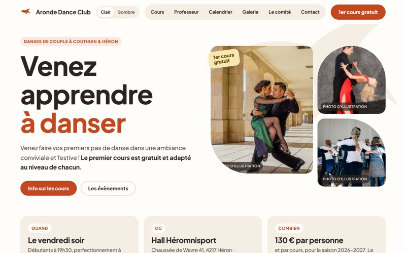
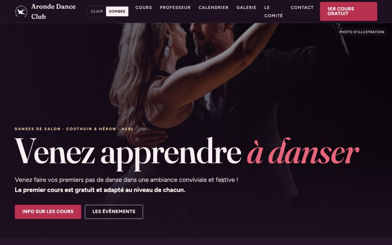

Maquettes du nouveau site
Aronde Dance Club Couthuin · document de travail
Six pistes pour la page d'accueil, à comparer. Toutes reprennent le même contenu (textes du site actuel, horaires, tarif, professeur, comité, contact) : seule la direction visuelle change.
Il y a trois mises en page (classique, sombre, conviviale), chacune déclinée en deux palettes : les trois premières s'appuient sur le marine du logo, les trois suivantes explorent d'autres tons. Toute palette peut être combinée avec toute mise en page.
Chaque maquette existe en version claire et en version sombre. « Comme dessiné » montre la version pour laquelle chacune a été conçue (quatre claires, deux sombres) ; « Clair » ou « Sombre » force l'autre. Le choix est repris dans chaque maquette, qui a aussi son propre interrupteur.
Les photos marquées « Photo d'illustration » sont des images libres de droits, à remplacer par des photos du club.
Autour du marine du logo

« Salon »
Ivoire chaud, marine et rouge hirondelle, serif classique, photo dans un cadre cintré. Élégant et rassurant.

« Soirée »
Bleu nuit, grand serif de mode, photo plein écran, bandeau défilant des neuf danses. Cinématographique.

« Hirondelle »
Blanc, formes arrondies, rouge franc, pastilles pastel par famille de danse, grande hirondelle. Accueillant et moderne.
Autres tons

« Bordeaux »
Structure de V1 en bordeaux, ivoire rosé et filets or, serif Caslon. Ambiance bal et velours.

« Terracotta »
Structure de V3 en terre cuite, sable et olive, pastilles sauge, pêche et moutarde. La plus chaleureuse.

« Prune »
Structure de V2 en prune, framboise et champagne, serif Fraunces. Soirée feutrée.